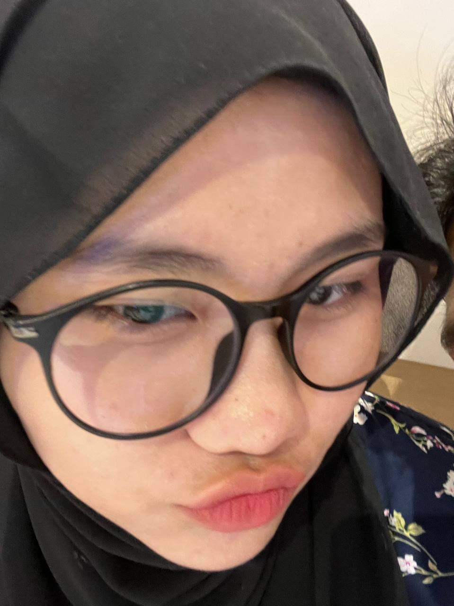

Selamat ulang tahun ke-18 sayangkuu 💙

Terima kasih udah selalu sabar banget sama mas yaa 🥰

Kita udah banyak banget lewat bareng, dan mas gamau berhenti di sini 💫

Semoga Allah jaga kamu untukku, dunia dan akhirat 🌙
Semoga apa yang kamu inginkan segera tercapai yaa 💞

💠Love youuuu 💞